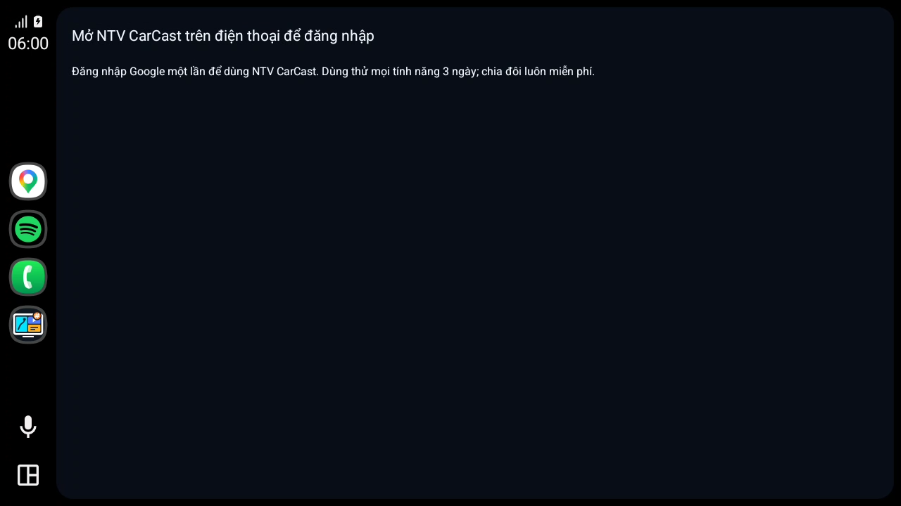
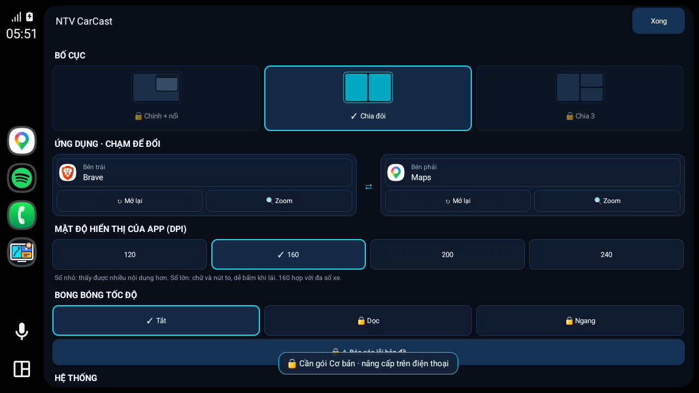
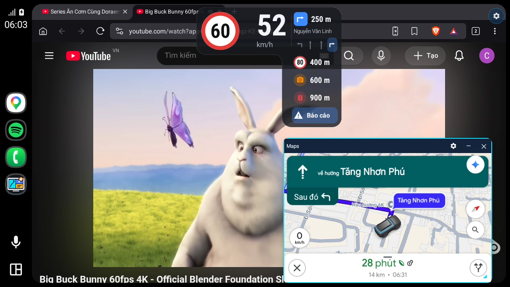
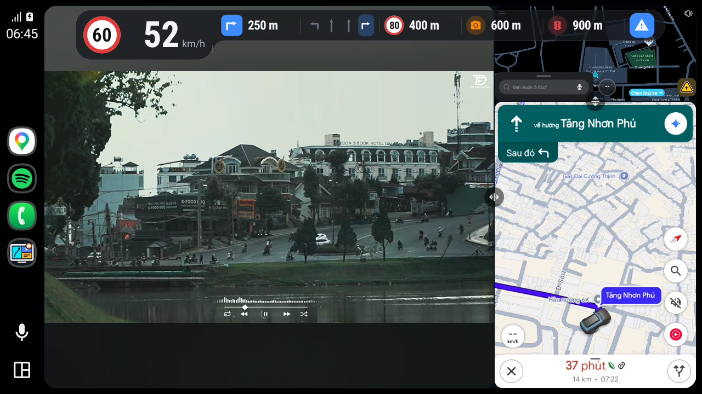

Các phiên bản
Cập nhật: tải bản mới, cài đè lên bản cũ (không gỡ, cài đặt và đăng nhập vẫn giữ), rồi khởi động lại điện thoại.
v1.5.0Mới nhất23/10/2026
Bản này có tài khoản Google và ba gói (Miễn phí / Cơ bản / Đầy đủ), dùng thử đầy đủ tính năng, báo lỗi ngay trên xe (2 chạm, kèm nhật ký đã che thông tin riêng) và nhắc bản mới từ máy chủ. App điện thoại chia thành 4 thẻ cho gọn; app mở nhanh hơn.
⚠️ Vẫn cần điện thoại đã root + LSPosed như cũ. Từ bản này phải đăng nhập Google mới dùng được. Cập nhật thì cài đè (không gỡ bản cũ), xong nhớ khởi động lại điện thoại.
Có gì mới
1. Đăng nhập Google, dùng thử, ba gói
Mở app lần đầu sẽ thấy màn chào: bấm Đăng nhập bằng Google. Tài khoản mới được dùng thử gói Đầy đủ (hiện là 3 ngày, số ngày lấy từ máy chủ nên có thể đổi). Hết thử thì về gói Miễn phí: chia đôi và các tính năng cơ bản vẫn dùng mãi, không giới hạn thời gian.
| Gói | Có gì | Giá |
|---|---|---|
| Miễn phí | Chia đôi, Toàn màn hình, tự mở khi kết nối, chỉnh DPI, zoom một vùng, tắt màn hình điện thoại | 0đ |
| Cơ bản | Miễn phí + 1 chính + 1 nổi (cửa sổ nổi, thu gọn) + chia 3 | 100.000đ, mua một lần, dùng vĩnh viễn |
| Đầy đủ | Cơ bản + bong bóng tốc độ, tốc độ trên thẻ media, báo cáo lỗi bản đồ | 200.000đ, mua một lần, dùng vĩnh viễn |
Giá, số ngày thử luôn theo bảng giá trên trang chủ: https://ntv-carcast.github.io/#bang-gia


Thẻ Tài khoản trên điện thoại: email, gói đang dùng và hạn (vd. "Dùng thử · còn 3 ngày", "Gói Đầy đủ · vĩnh viễn"), mã máy, giá từng gói, nút Kiểm tra lại, Mua gói, Liên hệ, Đăng xuất.
Trên màn hình xe:
- Chưa đăng nhập: xe chỉ hiện "Mở NTV CarCast trên điện thoại để đăng nhập", không mở app nào.
- Mục chưa có trong gói (Chính + nổi, Chia 3, bong bóng tốc độ, báo cáo) có 🔒 trong menu ⚙. Chạm vào thì xe báo "Cần gói … · nâng cấp trên điện thoại". Xe không hiện mã QR hay chỗ thanh toán nào.
- Bố cục đã chọn trước đó (vd. chia 3) vẫn được nhớ: mua gói xong là xe tự về đúng bố cục đó.
| Xe khi chưa đăng nhập | Menu ⚙ ở gói Miễn phí: 🔒 ở mục cần gói |
|---|---|
 |  |
| Gói Cơ bản: 1 chính + 1 nổi | Gói Cơ bản: chia 3 |
|---|---|
 |  |
Cách mua:
- Xem bảng giá trên trang chủ (nút Mua gói trong thẻ Tài khoản mở đúng chỗ này): https://ntv-carcast.github.io/#bang-gia
- Chuyển khoản theo số tài khoản trên trang, nội dung chuyển khoản ghi email Google bạn đã đăng nhập trong app.
- Chủ app kích hoạt gói theo email đó (làm tay, nên có thể mất một lúc). Xong thì bấm Kiểm tra lại trong thẻ Tài khoản (hoặc chờ lần nối xe sau): gói tự mở, không cần cài lại.
Cần biết:
- Mỗi tài khoản dùng trên 1 máy. Đổi máy thì bấm Liên hệ để chủ app gỡ máy cũ, rồi bấm Kiểm tra lại trên máy mới.
- Mỗi máy chỉ dùng thử bằng một tài khoản. Tài khoản thứ hai trên cùng máy vào thẳng gói Miễn phí.
- Lái xe không cần mạng. Gói được lưu trong máy và dùng không mạng tới 14 ngày; app tự gia hạn mỗi lần có mạng. Quá 14 ngày không có mạng thì về Miễn phí cho tới khi mở mạng và bấm Kiểm tra lại.
- Gói hết hạn giữa đường thì vẫn giữ tới hết lần lái đó.
- App chỉ lưu email Google để quản lý gói. Chi tiết: điều khoản.
- Mua gói là mua quyền sử dụng các tính năng trên, không phải ủng hộ / donate.
2. Báo lỗi ngay trên xe
Gặp lỗi khi đang dùng thì báo luôn, chủ app nhận được kèm nhật ký để sửa.
- Trên xe: menu ⚙ → 🐞 Báo lỗi → chọn nhóm (Hiển thị app, Bố cục, Bong bóng tốc độ, Khác) → chọn lỗi. 2 chạm, không phải gõ chữ. Xe hiện mã 4 ký tự (vd.
7F3A) để bạn nói khi liên hệ. - Trên điện thoại: thẻ Cài đặt → 🐞 Báo lỗi app: chọn lỗi, mô tả thêm (bị khi nào, ở app nào). Báo lỗi vừa gửi từ xe cũng hiện ở đây để thêm mô tả.
- Gửi kèm thông số máy và nhật ký phiên xe gần nhất. Nhật ký đã che địa chỉ trang web, email, toạ độ và mã đăng nhập trước khi gửi. Báo lỗi tự xoá trên máy chủ sau 90 ngày.
- Mất mạng thì báo lỗi được giữ trong máy, tự gửi khi có mạng (mở app hoặc nối xe).
3. Nhắc bản mới từ máy chủ
- Có bản mới thì thẻ Màn xe hiện thẻ "Có bản mới" kèm điểm mới và nút Mở trang phát hành; tab Tài khoản có chấm cam; màn hình xe hiện một dòng báo.
- Bản quá cũ (dưới bản tối thiểu chủ app đặt) thì được nhắc mỗi lần nối xe.
- App kiểm tra qua máy chủ và trang chủ NTV CarCast, không dùng GitHub nữa.
4. App điện thoại chia 4 thẻ
Thanh thẻ ở dưới: Màn xe (bố cục, app từng ô, DPI), Tốc độ (bong bóng tốc độ, nguồn dữ liệu, báo cáo bản đồ), Tài khoản, Cài đặt (tuỳ chọn khác, hướng dẫn cài, báo lỗi). Mục chưa có trong gói hiện 🔒 và ghi gói cần có.
5. Nhẹ và nhanh hơn
- Mở app và nối xe không phải chờ phần đăng nhập / máy chủ: màn hình xe lên ngay, gói kiểm sau ở nền.
- APK được thu gọn: khoảng 3,5 MB dù có thêm phần đăng nhập Google (không thu gọn thì khoảng 16 MB). Phần Android Auto vẫn giữ nguyên.
6. Biểu tượng mới
Biểu tượng NTV CarCast và CarCast Tốc độ vẽ lại, có dấu # cam ở góc (nhắc app cần root, phân biệt với NTV DriveTV).
Sửa lỗi
- Waze trong ô chia màn có lúc mở lên điện thoại thay vì trên xe (ô xe chỉ hiện "Đang mở Waze…"). Nay app tự kéo Waze về đúng ô.
- Chưa chọn bố cục thì mặc định là chia đôi (bố cục của gói Miễn phí).
Cập nhật từ v1.4.0 (hoặc cũ hơn)
- Tải NTV-CarCast-v1.5.0.apk bằng nút Tải APK của bản này, hoặc ở trang chủ: https://ntv-carcast.github.io/#tai-ve
- Cài đè lên bản cũ, không gỡ (cài đặt, quyền root và LSPosed vẫn giữ):
adb install -r -i com.android.vending NTV-CarCast-v1.5.0.apkHoặc cài bằng KingInstaller như lần đầu.
- Mở LSPosed xem NTV CarCast vẫn tích System Framework + Android Auto.
- Khởi động lại điện thoại.
- Mở NTV CarCast trên điện thoại → Đăng nhập bằng Google → bắt đầu dùng thử.
Người đang dùng v1.4.0 không có ưu đãi hay chuyển đổi riêng: đăng nhập và được dùng thử như mọi người.
Lỡ gỡ app rồi cài lại thì mất luôn những thứ nằm ngoài app, phải làm lại:
- Mở NTV CarCast → Magisk hỏi quyền Superuser → Cho phép, Vĩnh viễn.
- LSPosed → Modules → NTV CarCast → bật lại module, tích System Framework + Android Auto.
- Khởi động lại điện thoại, rồi đăng nhập lại (gói vẫn còn theo tài khoản).
Lưu ý
- Lần đầu đăng nhập cần mạng và tài khoản Google trên máy.
- Bong bóng, thẻ media và báo cáo (gói Đầy đủ) vẫn cần Waze Mod V14+ đang chạy.
- Đã thử trên Galaxy Z Flip3: đăng nhập thật, mất mạng, chỉnh giờ máy, cài đè, gỡ cài lại.
- Không thao tác trên app khi đang lái xe.
Yêu cầu
| Android | 10 trở lên (tắt màn hình khi cast: 12 trở lên) |
| Root | Magisk / KernelSU / APatch |
| Xposed | LSPosed, scope System Framework + Android Auto |
| Tài khoản | Google (đăng nhập trong app); mạng lúc đăng nhập và ít nhất 14 ngày một lần |
| Bong bóng / thẻ media / báo cáo | Gói Đầy đủ (hoặc dùng thử) · Waze Mod V14+ |
| Đã thử trên | Galaxy Z Flip3 · Android 15 · Android Auto 17.8 |
Kiểm tra file
SHA-256 8eb1889ade3fe3dca1a3cf3f188bcc3119370e9b8d99cbb3c35b4ad93101526b NTV-CarCast-v1.5.0.apkSử dụng có rủi ro; can thiệp Android Auto có thể vi phạm điều khoản của Google.